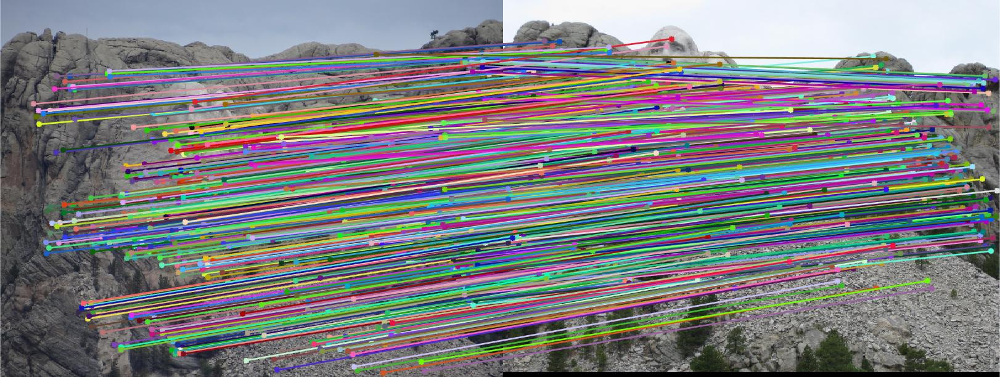
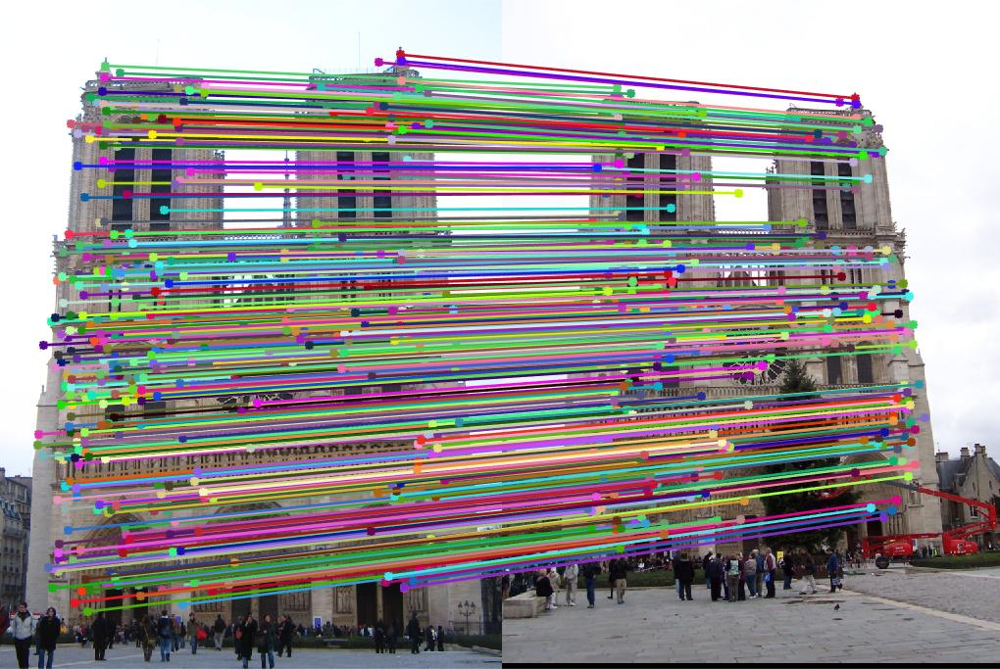

Camera Calibration and Fundamental Matrix Estimation with RANSAC
| Class | Instructor | Date | Language | Ta'ed | Code |
|---|---|---|---|---|---|
| CS 6476 Computer Vision | James Hays | Fall 2015 | MATLAB | No | Code N/A |
Loss of Depth as artistic tool - Elijah Wood looks tiny.
This project had 3 main objectives, derive components of the camera projection matrix (in our case, the camera center in world coordinates) when given two images with known correspondences and the metrics of those correspondences, derive the fundamental matrix describing world transformations between two cameras given two images, and use a RANSAC-driven optimisation algorithm to derive appropriate matches between two images with a very high level of accuracy through fundamental matrix estimation. To accomplish these tasks, I did the following :
- Part 1 : Deriving Camera Center
- Accumulate known image (2D) and corresponding world (3D) coordinates of an image scene. (Given)
- Build an interpolating matrix using the points in 2D and 3D space
- Solve Ax = 0 for x, where A is the interplating matrix, via Singular Value Decomposition, normalize the result, and reshape as a 3x4 matrix.
- Derive the camera location from this matrix by inverting the first 3x3 block and multiplying this block against the 4th column of the matrix
- Part 2 : Derive Fundamental Matrix
- (Graduate Requirement)Normalize all 2D (image coordinate) point locations so that the image center is (0,0) and the points vary in value between +/- sqrt(2). Save both the new points and the transformation matrix used to derive them.
- Use normalized points to derive Fundamental Matrix.
- Build Fundamental Matrix using similar mechanism as in Part 1 (model point interpolations, solve SVD and reshape vector as matrix to get desired matrix).
- Force rank 2 by remaking matrix with 3rd Eigenvalue set to 0
- Apply the inverse of transformations used to normalize points to derived matrix to get matrix for non-normalized points.
- Visualize resultant Epipolar lines derived from Fundamental Matrix.
- Part 3 : Scene Geometry via RANSAC
- Use vl_feat's SIFT library to derive interest points in two images and build a list of possible correspondences between each image.(Given code)
- Implement RANSAC to do the following steps repeatedly until "Victory Conditions", such as # of matches, are met :
- RANSAC SAMPLE : Take a small subset of the SIFT-derived matching pairs of points.
- RANSAC SOLVE : Derive the fundamental matrix of these points using the algorithm from Part 2.
- RANSAC SCORE : Evaluate the number of matching points that lie within a specified threshold using this Fundamental matrix.
- Visualize Epipolar lines resulting from the application of the best fundamental matrix, and the correspondences which lie upon these lines ("inliers").
- Part 3 EC : Improve RANSAC with KNN
- Take resultant "inliers" from the RANSAC algorithm.
- Find distance of all points in this set of inliers to their closest 20 neighbors, in each image.
- Discard RANSAC-derived results where the neighborhoods are more than some threshold different in each image
- Enjoy outlier-free correspondences between images
The Camera Projection Matrix
A camera takes light reflecting off of objects in a 3 dimensional scene and "projects" this light onto a 2 dimensional image, and therefore, in a sense, the camera acts like a projection matrix, where points in 3-space are being projected into 2-space. Given this description, a few things become evident, the most obvious of which is that this projection is lossy (the matrix has a non-0 kernel, is not full rank, etc.). This means that applying the (pseudo)inverse of this projection to points that have been projected into 2-space cannot reconstruct the original 3-space points that we started with, since information has been lost using the original projection. The information that is lost in this projection is information regarding the "depth" (distance from the camera) of a particular point in a scene. This fact is often used in movies to fool the viewer into perceiving a scene as different than it really is.
One way to address this loss is to have multiple images of the same scene from different points of view. If these images have known and measured correspondences between points in both 3D and 2D the equation which models the camera's projection process can be used to derive an approximation of the camera's projection matrix. This was the first part of the project.
Part 1 : Deriving the Camera Center
Equation that models camera projection from 3D to 2D.
With the given point registration data for points in both 2D and 3D, I was able to build an approximation of the camera's projection matrix using the equation shown to the left, building a matrix A that encodes the relation between the known points in 3D world space and their known 2D counterparts, and then solving the optimisation problem Ax = 0 using singular value decomposition with the added constraint that x be normalized. I then reshape the x vector so that it is a 3x4 matrix. Specifically, I used the following algorithm to find the Camera's Projection Matrix estimate :
%Deriving Camera Projection Matrix estimate
[n,m] = size(Points_3D);
%to build appropriate for SVD, include in both A mat locations
P3D = [Points_3D,ones(n,1)];
A = zeros(2*n,12);
uCol = Points_2D(:,1);
uRes = -repmat(uCol,1,(m+1)) .* P3D;
%odd rows of A,
A(1:2:2*n,:) = [P3D, zeros(n,4),uRes];
vCol = Points_2D(:,2);
vRes = -repmat(vCol,1,(m+1)) .* P3D;
%even rows of A
A(2:2:2*n,:) = [zeros(n,4), P3D,vRes];
%minimization
[U,S,V] = svd(A);
Mv = V(:,end);
Mv = Mv/norm(Mv);
M = reshape(Mv,[],3)';
Projection Matrix results using normalized point registration data in 2D and 3D, yielding a total residual of 0.0445 :
| 0.4583 | -0.2947 | -0.0140 | 0.0040 |
| -0.0509 | -0.0546 | -0.5411 | -0.0524 |
| 0.1090 | 0.1783 | -0.0443 | 0.5968 |
I then derived the world-center of the camera using the fact that the final column of this matrix holds the world center after world rotation and the application of the camera's various parameters described by its intrinsic matrix K. By applying the inverse of these quantities to the final column, the world coordinates of the camera's center are found. While the individual world rotation matrix R and intrinsic camera matrix K are not known, their product is known, which is the first 3 columns of the Projection matrix. By taking these first 3 columns as a 3x3 block matrix, inverting it and multiplying it against the final column of the projection matrix, the camera's world location was found to be (-1.5127, -2.3517, 0.2826)
Part 1 result images
|
Comparisons between measured and actual locations in image space - looks very close. |
3D model of point locations in world space, with the camera location being the red cross. |
Part 2 : Deriving the Fundamental Matrix
When given two different images of the same scene, correspondences between interest points can be found that can be used to algorithmically decide whether the images are of the same thing. This was the purpose of project 2, although the algorithms implemented in that project were not very rigorous. By modeling the real world transformation (rotation and translation) that describes the different location and orientation of the cameras responsible for these two images, we can theoretically achieve better performing matching, since we assume that the points responsible for good matches in the images would be geometrically invariant in both (the geometry within the scene does not change between each image).
The equation relating the fundamental matrix F to point A (u',v',1) and point B(u,v,1).
To build this transformation matrix, which we are calling the Fundamental matrix, we need a set of likely correspondences in each image. We then need to model the solution to the equation shown at left. This equation is basically saying that the application of the transformation described by the fundamental matrix to a point in one of the images would result in the point in the other image. By modeling how the points in one image relate to the points in the other in a matrix A, similar to the soluation of part 1, we are able to frame the problem as an optimisation problem Ax = 0, where we use SVD to derive x, and then reshape it to be a matrix.
To meet the requirements of the assignment as a Graduate Student, and to achieve better results, I normalized all the points in image coordinates. This improved the results because the equation being modelled by the matrix used to derive the Fundamental Matrix relies upon the product of point coordinates, along with individual point coordinates, causing the resultant values to be very different in magnitude and therefore the matrix of point correspondences is poorly conditioned and very sensitive to error. When normalized the values derived as the product of two point coordinates and those that are just single point coordinates do not vary so strongly, and therefore the resultant A matrix has a much better condition and is much less susceptible to error.
I normalized all the points I used so that the following criteria were met :
- The center of the image is (0,0) in the new coordinates.
- All coordinates are bounded to be +/- sqrt(2).
- The transformation(Translation and Scaling) responsible for the new coordinates is also retained.
%Deriving Fundamental Matrix
%Normalizing points (called for each image's points)
[n,m] = size(pts);
ptsHmg = [pts,ones(n,1)];
minPts = min(pts);
maxPts = max(pts);
dims = .5*( minPts + maxPts);
scaleT = eye(3,3);
transT = eye(3,3);
transT(1,3) = -dims(1);
transT(2,3) = -dims(2);
transPtsH = transT * ptsHmg';
maxVal = max(abs(transPtsH(:)));
sqrt2 = sqrt(2);
scaleT(1,1) = sqrt2/maxVal;
scaleT(2,2) = sqrt2/maxVal;
T = scaleT * transT;
normPts = scaleT * transPtsH;
normPts = normPts';
%Building normalized points :
[Pts1,T1] = normPoints(Points_2D_pic_a);
[Pts2,T2] = normPoints(Points_2D_pic_b);
%building Fundamental Matrix of normalized points
%f11*u*u' + f12*v*u' + f13*1*u' + f21*u*v' + f22*v*v' + f23*1*v' + %f31*u + f32*v + f33 = 0 yields ->
% [ u*u' v*u' 1*u' u*v' v*v' 1*v' u v 1 ] * fVec = 0 for all pt pairs
% variance of result of multiplication from 0 is error in point correspondence
% A matrix for Ax = 0 optimisation
A = [Points_a(:,1).* Points_b(:,1), Points_a(:,2).* Points_b(:,1), Points_b(:,1), ...
Points_a(:,1).* Points_b(:,2), Points_a(:,2).* Points_b(:,2), Points_b(:,2), ...
Points_a ];
%minimization
[U,S,V] = svd(A);
f = V(:,end);
Fp = reshape(f,[3 3])';
%rank correction
[U,S,V] = svd(Fp);
S(3,3) = 0;
F_norm = U*S*V';
%Correcting Fundamental Matrix
F_matrix = T2' * F_norm * T1;
Derived Fundamental Matrix for Part 2 :
| -6.46607614517216e-08 | 8.90064110539166e-07 | -0.000222927994480835 |
| 6.12091836383665e-07 | -1.53808970510701e-07 | 0.00178781525152141 |
| -1.31445108492963e-05 | -0.00245485353100954 | 0.0574363748718203 |
Part 2 result images showing Epipolar lines through each interest point.
Part 3 : Scene Geometry
The images used to derive the fundamental matrix in Part 2 were staged scenes with perfect point-to-point correspondences. This is unusual, and highly unlikely in real-world image pairs. To build a fundamental matrix of two images in a more realistic setting, some kind of mechanism is necessary to derive initial guesses at interest point correspondences in the two images, similar to the mechanisms used in Project 2. For Part 3 of Project 3, the vl_feat library was used to build reasonable but unreliable correspondences between the two images using SIFT. As can be seen below, the majority of the matches that the SIFT detector returns are good, but there are many that are obviously quite wrong.
Part 3 Sift correspondences in each of 3 images
| Mount Rushmore |
| Notre Dame |
| Gaudi |
A random subset of these correspondences were then used to build a fundamental matrix, and then this fundamental matrix was used to gauge the entire set of correspondences suggested by SIFT. This process was iterative, where a different random subset was chosen each iteration and subsequently a different fundamental matrix was derived and used to measure the SIFT correspondences.
This iterative process of SAMPLE, SOLVE, SCORE is the RANSAC algorithm, shown below :
%RANSAC to derive Best Fundamental Matrix relating correspondences between two images
[n, m] = size(matches_a);
%initialize values
bestMat = zeros(3,3);
bestNumIn = -1;
bestEval = -1;
bestBoolIdx = 0;
%minimum # to be in to be good - 80% of potential matches are good matches, for example - use as threshold
numThresh = picCutoff*n;
%normalize points in correspondences
[normPtsA,T1] = normPoints(matches_a);
[normPtsB,T2] = normPoints(matches_b);
iters = 0;
totIters = 0;
while((bestNumIn < numThresh) && (iters < maxIters))
%build index of random correspondences to use to make fMat
rndIdxVec = randperm(n,numSamples);
%implemented to expect points to be normalized
fMatP = estimate_fundamental_matrix(normPtsA(rndIdxVec,:), normPtsB(rndIdxVec,:));
%undo translation/scaling from normalization
fMat = T2' * fMatP * T1;
%evaluate results
matA = [matches_a, ones(n,1)]';
matB = [matches_b, ones(n,1)];
eval = diag(matB * fMat * matA); %best matches are closest to 0 here
%find idxs of all matches whose absval of evaluation of fundamental mat is less than thresh from 0
inBoolVec = abs(eval) < args.thresh;
inIdxVec = find(inBoolVec);
numIn = size(inIdxVec,1);
%update best results
if(bestNumIn < numIn)
bestEval = eval;
bestMat = fMat;
bestNumIn = numIn;
bestBoolIdx = inBoolVec;
fprintf('getting there - bestNumIn : %i iters : %i\n',bestNumIn, iters);
fprintf('');
iters = 0;
end
iters = iters+1;
totIters = totIters + 1;
end
[bestEval, idxs] = sort(abs(bestEval), 'ascend');
bestPtsIdx = find(bestBoolIdx);
Best_Fmatrix = bestMat;
%sorted results for inliers
%all matches, sorted by confidence (closeness of x'Fx evaluation to 0) - will only use first bestNumIn matches
inliers_a = matches_a(idxs,:);
inliers_b = matches_b(idxs,:);
Results for 3 images Mount Rushmore, Notre Dame, and Gaudi :
| Mount Rushmore | ||
| Took total of 11059 iterations of RANSAC to find best 663 matches out of 825 possible matches | ||
| RANSAC's best Fundamental Matrix | ||
| -1.12713263888141e-06 | 2.92504054233633e-05 | -0.0340951941017431 |
| -3.04935221986580e-05 | -1.93576861772585e-06 | 0.0373282060964499 |
| 0.0339789068106197 | -0.0330498555432918 | 1 |
RANSAC Results for Rushmore
| Notre Dame | ||
| Took total of 10625 iterations of RANSAC to find best 662 matches out of 851 possible matches | ||
| RANSAC's best Fundamental Matrix | ||
| -4.94921372789989e-08 | -2.02358597135129e-06 | 0.000984516104178041 |
| -1.07665342094580e-06 | 1.48947027467279e-06 | -0.0244252667301020 |
| 0.000981925104854017 | 0.0197638002035149 | 1 |
RANSAC Results for Notre Dame
| Gaudi | ||
| Took total of 13187 iterations of RANSAC to find best 496 matches out of 1062 possible matches | ||
| RANSAC's best Fundamental Matrix | ||
| -3.47771277780910e-07 | -5.67617382605800e-07 | -0.00133080491994929 |
| 7.44428824303864e-06 | 4.78602343157214e-07 | 0.0385896109474190 |
| -0.00489170201689158 | -0.0307650625696326 | 1 |
RANSAC Results for Gaudi
These results are much better than those found in Project 2, especially for the Gaudi Cathedral, but especially in this last set of images, clear outliers still exist - not many, but some are still there, and obvious. I implemented an extra algorithm for potential Extra Credit to filter these bad results.
Extra Credit (?) : Clean Up Ransac Results using KNN
I noticed as I performed the optimization that sometimes some bad matches would sneak through with RANSAC - even with a fairly tight bound on acceptable values for the evaluation of the fundamental matrix function, a few obviously bad matches still made it into the resultant "inliers" returned from my RANSAC implementation. To address these I implemented a clustering algorithm, using the following assumptions :
- Clustering assumptions
- Most of the matches being compared were good matches.
- Match points in one image had the same set of "good match" neighbors as corresponding match points in the other image.
Using this set of assumptions, I was able to discard all the spurious fake "inliers" from each of the image pairs while preserving the integrity of the good matches. The algorithm I followed was :
%KNN with neighborhood of 20, to get rid of spurious "inliers"
ngbrsToChk = 20;
%match at least thresh% of neighbors in each neighborhood to be considered good
matchCntThresh = ngbrsToChk * args.knnThresh;
%normalize coords in both images
[normPtsA,T1] = normPoints(matches_a);
[normPtsB,T2] = normPoints(matches_b);
%build neighborhoods of points - for each point find ngbrsToChk closest points
%in pic A, then do the same in pic B
closePtsA = findClosestPts(normPtsA);
closePtsB = findClosestPts(normPtsB);
%ignore first point idx in column - will always be same as col
ptIdxAraA = closePtsA(2:(ngbrsToChk+1),:);
ptIdxAraB = closePtsB(2:(ngbrsToChk+1),:);
numMatches = zeros(n,1);
for col = 1:size(matches_a,1)
numMatches(col) = countMatches(ptIdxAraA(:,col), ptIdxAraB(:,col));
end
[srtByNumMatches, idxs] = sort(numMatches,'descend');
%cutoff by threshold for "good neighbors"
bestIdxs = idxs(srtByNumMatches > matchCntThresh);
knnMtch_a = matches_a(bestIdxs,:);
knnMtch_b = matches_b(bestIdxs,:);
As can be readily seen in the examples below, the KNN "cleanup" succeeded in removing the false "inliers" that RANSAC returned, whether due to a too-permissive threshold, or just bad luck. Particularly in the Gaudi and Notre Dame images, the bogus correspondences between points in the sky and points on the sidewalk in the RANSAC results are gone in the KNN images.
Results for 3 images Mount Rushmore, Notre Dame, and Gaudi after KNN :
| Mount Rushmore | ||
| KNN kept 638 inliers of RANSAC's best 663 matches out of 825 possible matches | ||
| KNN Results' best Fundamental Matrix | ||
| -1.17056306801633e-06 | 3.04394451977421e-05 | -0.0381153221825819 |
| -3.03774850349376e-05 | -2.53299582797175e-06 | 0.0377298121373268 |
| 0.0378979333630169 | -0.0339377086939328 | 1 |
KNN Results for Rushmore
|  | |
| Notre Dame | ||
| KNN kept 468 inliers of RANSAC's best 662 matches out of 851 possible matches | ||
| KNN Results' best Fundamental Matrix | ||
| -2.93287133129832e-07 | -4.57306780469559e-06 | 0.00110904428020076 |
| 9.42985715580798e-07 | 1.47830500680341e-06 | -0.0266215510336574 |
| 0.00120057237770904 | 0.0218976472434726 | 1 |
KNN Results for Notre Dame
|  | |
| Gaudi | ||
| KNN kept 442 inliers of RANSAC's best 496 matches out of 1062 possible matches | ||
| KNN Results' best Fundamental Matrix | ||
| -3.38948334394038e-07 | 5.97086556447964e-07 | -0.00268576825521574 |
| 7.04374076434359e-06 | 5.67591972198559e-07 | 0.0446414760459087 |
| -0.00459928573149913 | -0.0353876622687925 | 1 |